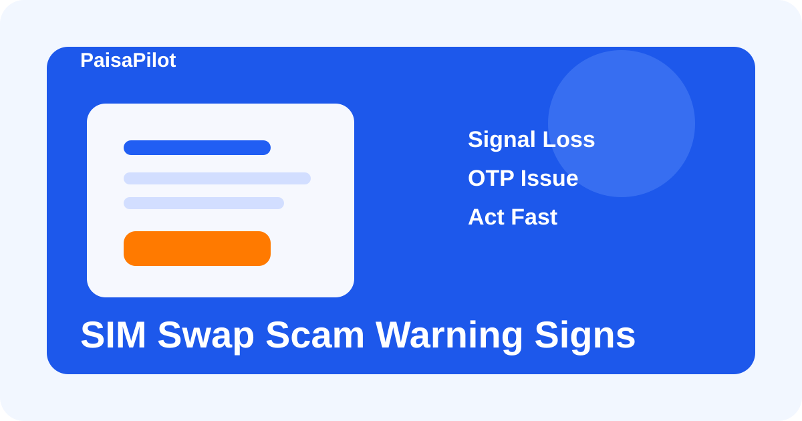

SIM Swap Scam Warning Signs: account loss se pehle kya signals milte hain
Last updated: April 29, 2026

SIM swap scam quietly aapke phone number linked OTP flow ko capture kar sakta hai. Agar early warning signs miss ho gaye to fraud banking aur wallet accounts tak spread ho sakta hai.
Quick Answer
Agar phone achanak signal lose kare, OTP aana band ho jaye, aur saath me strange account alerts aayein, to isse serious warning samjhein. Official telecom support aur banking security steps turant use karein.
Warning Signs
- achanak network loss
- OTP messages na aana
- unexpected login alerts
- telecom-related strange messages
- UPI ya bank app behavior unusual lagna
- calls aur texts fail hona
First Response
| Action | Kyon important hai |
|---|---|
| telecom official support contact karein | SIM status confirm hota hai. |
| banking apps secure karein | OTP-linked risk kam hota hai. |
| alerts review karein | Suspicious access jaldi pakad me aata hai. |
| critical passwords badlein | Further compromise limit hota hai. |
Related Guides
Bank Fraud Complaint Steps, Scam Prevention Checklist, UPI Safety Guide